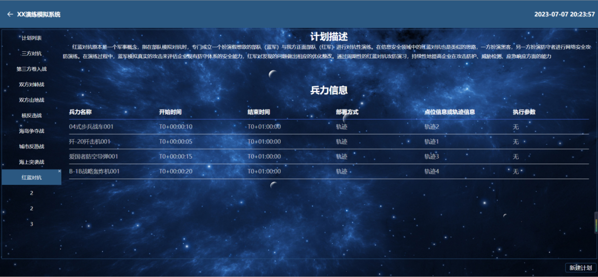
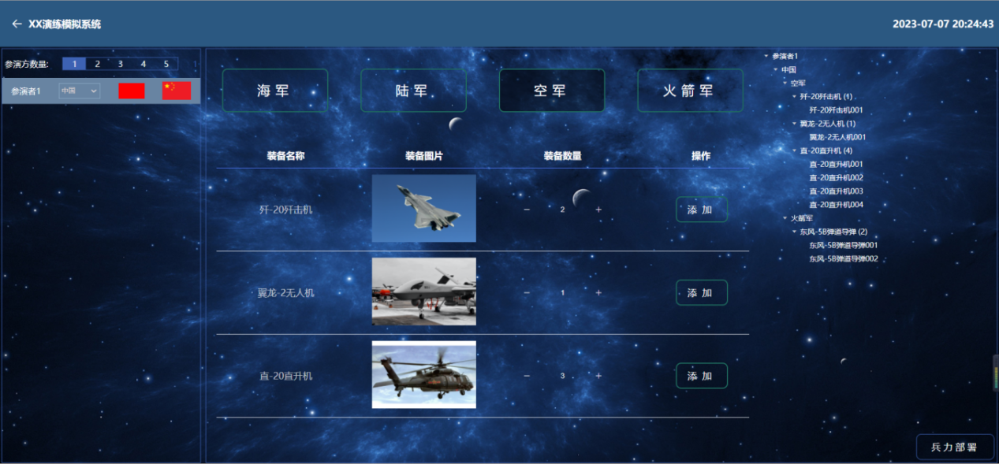
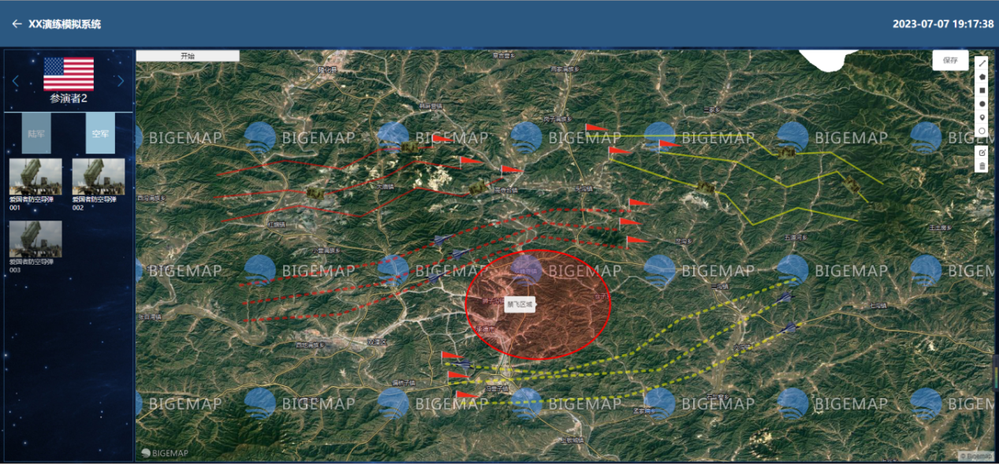

任务筹划软件就是为两军对抗制作一个训练软件，通过模拟计划、 BL编成为两军配置作战BL，再通过行动筹划，为两军具体BL规划出相应的行动，最后根据编制的ZZ计划来实现两军对抗模拟演练。效果图如下：
展示以往规划的计划信息，内容包括计划名称、计划描述、计划中具体BL信息，方便用户在新建计划的时候复用，也可选择重新创建计划。
任务筹划软件就是为两军对抗制作一个训练软件，通过模拟计划、 BL编成为两军配置作战BL，再通过行动筹划，为两军具体BL规划出相应的行动，最后根据编制的ZZ计划来实现两军对抗模拟演练。效果图如下：
对之前参演方配置的BL，筹划相应的路线以及行动（TD、装备FS等），待BL、参数等信息配置完成后，点击页面“开始”按钮即是让此次行动中的设备按照所设置的路线和响应时间行动起来，达到对整个计划的预览效果。
